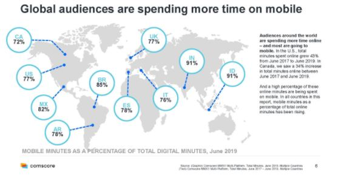

Home News Contact About
Welcome to Impact of Social Media

Contact:dharunselvaraj30@gmail.com 91+8524979754
Home News Contact About
Why People Share Information?
Top 7 Impacts of Social Media
Top 20+ Advantages and Disadvantages of Social Media
The Bottom Line
FAQs
Information and communication technology has changed rapidly over the past 20 years, with a key development being the emergence of social media.
The pace of change is accelerating. For example, the development of mobile technology has played an essential role in shaping the impact of social media. Across the globe, mobile devices dominate in terms of total minutes spent online. They put the means to connect anywhere, at any time on any device in everyone’s hands.
A fascinating study by the New York Times Consumer Insight Group revealed the motivations that participants cited for sharing information on social media. These include a desire to reveal valuable and entertaining content to others; to define themselves; to grow and nourish relationships and to get the word out about brands and causes they like or support.
These factors have caused social networks to evolve from being a handy means for keeping in touch with friends and family to being used in ways that have a real impact on society.
The Influence of Social media is being used in ways that shape politics, business, world culture, education, careers, innovation, and more.
Learn all about SEO, Content Marketing, Email-marketing, PPC, and more in our Digital Marketing Specialist course. Start your journey today!
A new study from Pew Research claims that about one in five U.S. adults gets their political news primarily through social media. The study also finds that those who do get their political news primarily through social media tend to be less well-informed and more likely to be exposed to unproven claims that people who get their news from traditional sources.
In comparison to other media, the influence of social media in political campaigns has increased tremendously. Social networks play an increasingly important role in electoral politics — first in the ultimately unsuccessful candidacy of Howard Dean in 2003, then in the election of the first African-American president in 2008, and again in the Twitter-driven campaign of Donald Trump.
The New York Times reports that “The election of Donald J. Trump is perhaps the starkest illustration yet that across the planet, social networks are helping to fundamentally rewire human society.” Because social media allows people to communicate more freely, they are helping to create surprisingly influential social organizations among once-marginalized groups.
Social Media Certification
Almost a quarter of the world’s population is now on Facebook. In the U.S., nearly 80% of all internet users are on this platform. Because social networks feed off interactions among people, they become more powerful as they grow.
Thanks to the internet, each person with marginal views can see that he’s not alone. And when these people find one another via social media, they can do things — create memes, publications, and entire online worlds that bolster their worldview, and then break into the mainstream.
Without social media, social, ethical, environmental, and political ills would have minimal visibility. Increased visibility of issues has shifted the balance of power from the hands of a few to the masses.